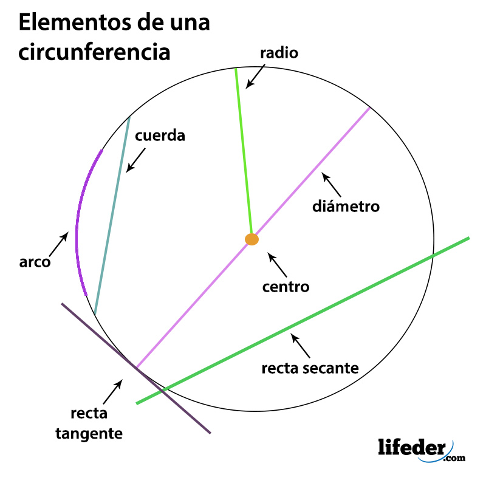

Concepto de circunferencia
El círculo es una región del plano delimitada por una circunferencia y, por tanto, tiene asociada un área.A veces se utiliza indistintamente círculo por circunferencia siendo esta última su borde, es decir, la curva perimetral que lo determina y que solo posee longitud.
Una circunferencia es el lugar geométrico de los puntos de un plano que equidistan a otro punto llamado centro.
